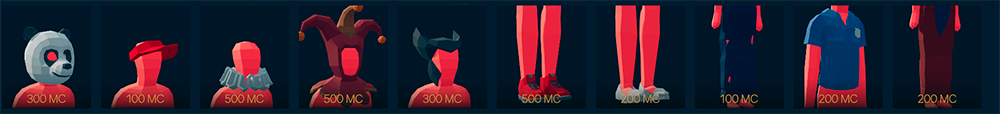
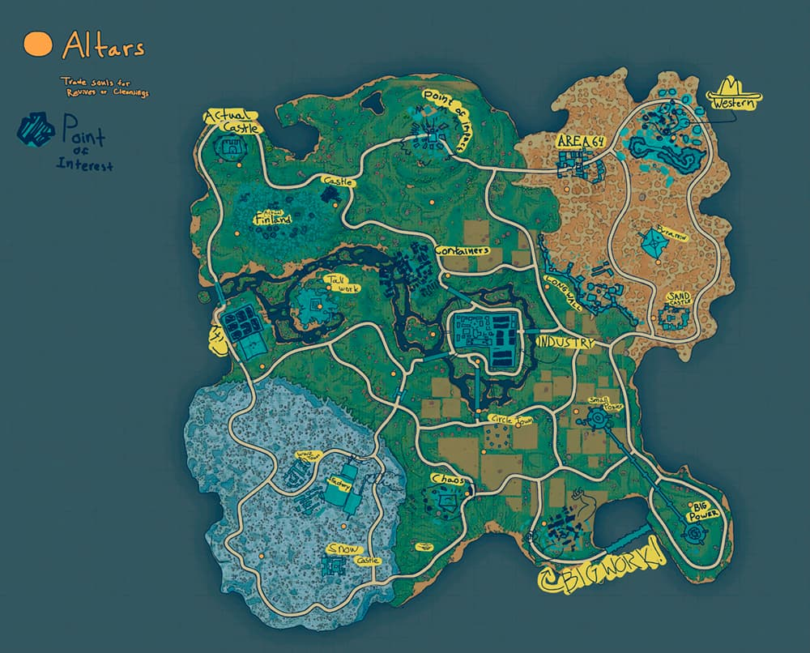

TABG
Totally Accurate Battlegrounds (TABG; з англ. — «дуже правдоподібні поля битв») — розрахована на багато користувачів комп'ютерна гра в жанрі королівської битви c Ragdoll-фізикою, розроблена шведською студією Landfall Games як спін-оф Totally Accurate Battle Simulator (TABS) ранній доступ 5 червня 2018 року. Аналогічно тому, як TABS пародує жанр симуляторів битви, TABG є пародією на королівські битви на кшталт PUBG: Battlegrounds та Fortnite, з гіперболізованою фізикою зброї та гравців.
Розробітники у Steam про гру
Королівська битва, якою ви її ще не бачили. Розпочніть матч, стрибнувши з парашутом обличчям до будівлі, і завершіть гру, перемігши своїх опонентів у неймовірній грі з лавою.
Магазин
У цій грі також як і в інших іграх жанру королівської битви є магазин де можна покупляти одяг та аксесуари.
Мапа
Серафім Ігруха